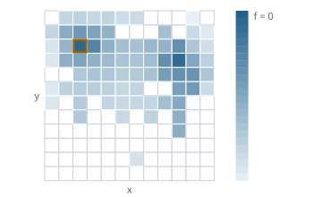

Suchen nach Güte und Vielfalt, für jede Anwendung
Funktionsübersicht für die Präsentation des envisionz-Frameworks, Stand 28.09.2026. Qualitäts-Vielfalts-Suche nach dem Muster MAP-Elites, austauschbare Vorschlagsoperatoren von der Zufallsmutation über differentielle Evolution und CMA-ES bis zum Ersatzmodell, Ablage von Genomen und Archiven, Anbindung über ServiceLoader und ein Präferenzmodell aus Paarurteilen. Je Verfahren: Zweck, Methoden, Einsatz im Framework, Anwendungen, Beispiele. Die Beispiele sind gekürzt.

EvolveEngine und MapElitesArchive gerechnet: das Archiv nach 266 Bewertungen, 73 von 144 Nischen besetzt.Grundsätze des Moduls
Evaluator und Proposer an; das Fachwissen gehört in deren Bewerter.java.base ist ein Vertrag. Kein Jar, kein Netzzugang, keine Reflexion, damit das Modul in jedem native-image-Starter mitfährt. Der frühere LLM-Operator wurde deshalb entfernt.NumericGenome an; Aufzählungen, Schalter und Folgen haben eigene Operatoren.confidence()-Schranke als Ziel benutzt; ohne sie läuft die Suche in Gebiete, in denen das Modell nur rät.Grundgerüst: Kandidat, Bewertung, Archiv, Suchlauf envisionz.evolve
Candidate, Evaluation, Evaluator
Ein Genom ist eine Zuordnung benannter Zeichenketten, mit Herkunft (Startwert, Mutation, Kreuzung, Reparatur) und Generation. Die Bewertung trägt Güte, die Deskriptoren für die Nischen, den Status und Zusatzmetriken. Der Bewerter nennt Achsen, Genschema und Startpopulation. MAP-Elites – Hintergrund, Formeln und Pseudocode → Suchlauf – Hintergrund, Formeln und Pseudocode →
Methoden
Candidate.seed(genes),child(newGenes, origin);Origin:SEED,MUTATION,CROSSOVER,REPAIREvaluation.ok(fitness, descriptors, metrics),invalid(msg),error(msg),isOk()Evaluator:id(),displayName(),axes(),seeds(),geneSpec(),evaluate(c)Evaluator.Axis(name, unit, min, max, bins),bin(value)– Werte außerhalb fallen in die Randzellen
Eingesetzt in
Wofür
Parameter einer Bildauswertung einstellen; Startwerte für den Newton-Löser finden, die über viele Betriebspunkte konvergieren.
Beispiel – Bewertung eines Kandidaten
public Evaluation evaluate(Candidate c) {
double x = Double.parseDouble(c.genes().get("x"));
return Evaluation.ok(-x * x, new double[] {x}, Map.of()); // Güte, Deskriptor je Achse
}MapElitesArchive und EvolveEngine
Das Archiv ist ein Gitter aus Nischen, threadsicher, mit Elternwahl, die gute Eliten bevorzugt. Der QD-Wert misst Güte und Vielfalt zugleich. Die Schleife bewertet parallel, meldet jedes bewertete Kind an den Operator zurück und lässt sich abbrechen; sie kann auf einem vorbesetzten Archiv weiterlaufen.
Methoden
new MapElitesArchive(axes),insert(c, eval),cellOf(descriptors),best(),elites(),sampleParents(n, eliteBias, rnd)coverage(),capacity(),qdScore(),totalInserts(),totalAccepted(),totalRejected()new EvolveEngine(evaluator, proposer, config[, archive]),run(onProgress),cancel(),archive()Config(budget, batchSize, parentsPerJob, eliteBias, threads, topExamples, seed),Config.defaults();Progress(generation, evaluations, coverage, qdScore, bestFitness, acceptedThisGen)
Eingesetzt in
Wofür
Nicht nur die eine beste Einstellung finden, sondern eine Landkarte guter Lösungen über die Verhaltensachsen.
Beispiel – Suchlauf mit zwei gemischten Operatoren
NumericGenome ng = NumericGenome.inferFrom(startGenom, 3.0);
Proposer prop = new MixedProposer(1L, true)
.add("zufall", new GaussianMutationProposer(ng, 0.1, 3, 1L), 1.0)
.add("de", new DifferentialEvolutionProposer(ng, 0.7, 0.9, false, 2L), 1.0);
EvolveEngine engine = new EvolveEngine(bewerter, prop, EvolveEngine.Config.defaults());
MapElitesArchive archiv = engine.run(p -> System.out.println(p.bestFitness()));Config.budget ist keine harte Obergrenze: geprüft wird vor jeder Generation, danach läuft sie ganz durch, und die Startwerte kommen hinzu.Operatoren für Zahlengene envisionz.evolve
NumericGenome, GaussianMutationProposer, DifferentialEvolutionProposer
NumericGenome bildet Genom und Vektor mit Grenzen aufeinander ab, auch ganzzahlig, und kann die Grenzen aus einem Beispielgenom ableiten. Die Gauß-Mutation ist Vergleichsmaßstab und Anwärmer. Die differentielle Evolution (DE/rand/1 oder DE/best/1) rechnet v = a + F·(b − c) und braucht mindestens vier Individuen. Gauß und DE – Hintergrund, Formeln und Pseudocode → CMA-ES und Ersatzmodell – Hintergrund, Formeln und Pseudocode →
Methoden
new NumericGenome(genes),Gene(key, min, max, integer),inferFrom(sample, factor)toVector(genome),toGenome(v, base),normalize(v),clamp(v)new GaussianMutationProposer(map, sigmaFraction, maxChanges, seed)new DifferentialEvolutionProposer(map, F, CR, bestVariant, seed)
Eingesetzt in
Wofür
Zahlenparameter mit Grenzen; die differentielle Evolution ist die erste Wahl.
CmaEsProposer und SurrogateProposer
CMA-ES passt die Kovarianz an (Jacobi-Eigenzerlegung) und ist bei stark gekoppelten Parametern im Vorteil; er ist zustandsbehaftet und braucht die Rückmeldung über tell, ungültige Kinder zählen als −∞. Das Ersatzmodell (RBF) wählt nach Nutzen plus Unsicherheit und lohnt bei teuren Bewertungen.
Methoden
new CmaEsProposer(map, start, sigma0, lambda, seed)(λ = 0: Faustformel 4 + 3 ln n),generation(),sigma(),tell(…)new SurrogateProposer(map, beta, probes, seed),observe(genome, fitness),predict(x),uncertainty(x),observations()Proposer:propose(parents, context, n),tell(child, eval, accepted)
Eingesetzt in
Wofür
Gekoppelte Parameter (CMA-ES); Bewertungen, die eine Minute oder länger dauern (Ersatzmodell).
Strukturgene und Folgen envisionz.evolve
StructuralGenome, StructuralMutationProposer, SequenceGenome, SequenceMutationProposer
Strukturgene sind Aufzählungen und Schalter; der Operator wechselt einen Wert oder schaltet um. Die Schalter sind geordnet abgelegt, derselbe Keim gibt also bei jedem Start dieselben Kandidaten. Folgengene sind geordnete Listen aus einem Vorrat (kommagetrennt kodiert); der Operator tauscht, verschiebt, fügt ein und entfernt. Hintergrund, Formeln und Pseudocode →
Methoden
new StructuralGenome(enums, booleans),inferFrom(sample),enums(),booleans()new StructuralMutationProposer(structure, seed)new SequenceGenome(genes),Gene(key, elements, minLen, maxLen, allowRepeat),parse(value),format(elements)new SequenceMutationProposer(map, seed)
Eingesetzt in
Wofür
Verfahrenswahl und Schalter einer Auswertekette; die Reihenfolge von Filtern als Suchgegenstand.
Operatoren mischen envisionz.evolve
MixedProposer – mehrere Operatoren über dasselbe Archiv
Wählt je Vorschlag einen Operator nach Gewicht, auf Wunsch angepasst an die Trefferquote. Die Rückmeldung geht an den Ursprungsoperator, damit auch CMA-ES und Ersatzmodell im Gemisch ihre Beobachtungen bekommen. Hintergrund, Formeln und Pseudocode →
Methoden
new MixedProposer(seed, adaptive),add(name, proposer, weight),entries()Entry:name(),weight(),proposed(),accepted(),hitRate();feedback(child, accepted)
Eingesetzt in
Wofür
Zahlen- und Strukturgene in einem Lauf; messen, welcher Erzeugungsweg wirklich Verbesserungen liefert.
proposed() wird in feedback hochgezählt, nicht beim Vorschlagen: ohne Rückmeldung bleibt es bei null.Ablage und Bewertungsspeicher envisionz.evolve
GenomeIO, ArchiveIO, MemoizingEvaluator
Ein Genom als geordnete key=value-Textdatei: die Austauschform zwischen Suche und Voreinstellungen der Oberfläche. Ein Archiv als Verzeichnis mit axes.properties und elite-*.properties, damit über Läufe und Sitzungen weitergelernt wird. Der Speicher legt eine LRU-Zwischenablage Genom → Bewertung um einen deterministischen Bewerter. Hintergrund, Formeln und Pseudocode →
Methoden
GenomeIO.load(file),loadResource(near, name),save(genes, file, comment)ArchiveIO.save(archive, dir),load(dir),exists(dir),describe(dir)new MemoizingEvaluator(delegate[, capacity])(Vorgabe 10 000),hits(),misses()
Eingesetzt in
Wofür
Gefundene Einstellungen in der Oberfläche benutzen; eine Suche morgen dort fortsetzen, wo sie heute stand.
Beispiel – Archiv sichern und später weiterrechnen
ArchiveIO.save(archiv, Path.of("lauf-01"));
MapElitesArchive weiter = ArchiveIO.load(Path.of("lauf-01"));
new EvolveEngine(bewerter, prop, cfg, weiter).run(null);Anbindung über den ServiceLoader envisionz.evolve
EvaluatorProvider – Bewerter bekannt machen ohne App-auf-App-Kanten
Eine App meldet ihre Bewerter an; eine allgemeine Oberfläche (app-learn) findet sie und bekommt dazu Eingaben und die Genombeschreibungen mit exakten Grenzen und Vorräten.
Methoden
id(),displayName(),description(),inputs(),create(inputs)→EvaluatornumericGenome(),structuralGenome(),sequenceGenome()(Vorgabenull)
Eingesetzt in
digitizer.b52-carpetapp-eqnparser: eqnparser.guessapp-learn: Entdeckung der BewerterWofür
Eine Such-Werkbank für alle Anwendungen, statt einer Suchoberfläche je Anwendung.
Präferenzmodell aus Paarurteilen envisionz.evolve
PreferenceModel – Bradley-Terry mit Vertrauensmaß
Wenn sich die Zielgröße nicht hinschreiben lässt: ein Mensch sagt „A oder B besser“, das Modell lernt Gewichte der Merkmale (L2-regularisiert). confidence() misst den Abstand zum nächsten bewerteten Beispiel. Belastbar ab 30 bis 50 Urteilen. Hintergrund, Formeln und Pseudocode →
Methoden
new PreferenceModel(featureNames),fit(pairs, lambda, steps),Pair(better, worse)score(x),confidence(x),accuracy(pairs),weights(),names()
Eingesetzt in
Wofür
Güte einer Kurvenextraktion nach Augenmaß; jede Zielgröße, deren handgeschriebene Fassung danebenliegt.
Beispiel – Gewichte aus Urteilen, Suche nur im Vertrauensbereich
PreferenceModel pm = new PreferenceModel(new String[] {"glatt", "abdeckung"});
pm.fit(urteile, 0.05, 500);
double nutzen = pm.score(merkmale), vertrauen = pm.confidence(merkmale);Einsatzmatrix im Framework
Welche Module welche Teile heute nutzen, im Quelltext gezählt (ohne Proben).
| Modul | Grundgerüst | Suchlauf & Archiv | Zahlenoperatoren | Struktur | Mischen | Ablage | Anbindung | Präferenz | Wofür |
|---|---|---|---|---|---|---|---|---|---|
| app-learn | ● | ● | ● | ● | ● | ● | ● | Allgemeine Such-Werkbank: Bewerter wählen, Operatoren mischen, Archiv fortsetzen | |
| app-digitizer | ● | ● | ● | ● | ● | ● | Parametersuche der Kurvenverfolgung (Carpet-Plot B-52), Voreinstellungen | ||
| app-eqnparser | ● | ● | ● | Startwerte für den Newton-Löser über Punktelisten |